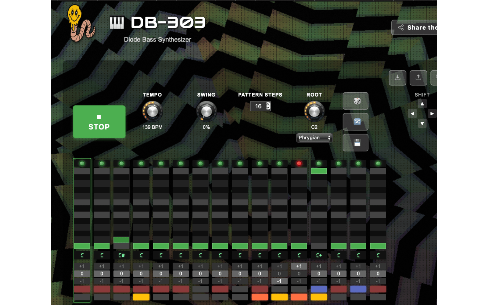

DB-303
Mutant Diode Bass
If you love hearing a 303 getting punished to its limits, this is for you! Circuit-modelled diode ladder, screaming nonlinearities, and more:
- Multimode morphing filters
- DevilFish mods
- Step-sequencer with palm-mute & hammer-ons